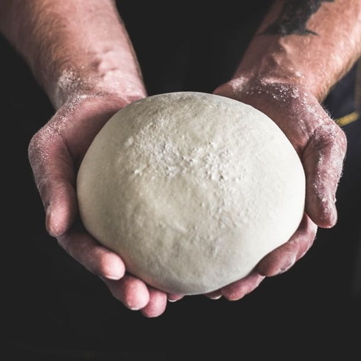

לחם מחמצת
רכיבים
- 280 גרם קמח לבן
- 115 גרם מחמצת
- 120 גרם מים
- 6 גרם מלח
שלבי ההכנה
- מוסיפים מים לשאור ולאחריו את הקמח בהדרגה
- לשים עשר דקות ולאחר מכן מוסיפים את המלח ולשים עוד 5 דקות
- מתפיחים פעמיים - 4 שעות תפיחה ראשונה ושלוש שעות תפיחה שניה
- אופים 45 דקות ב-180 מעלות
